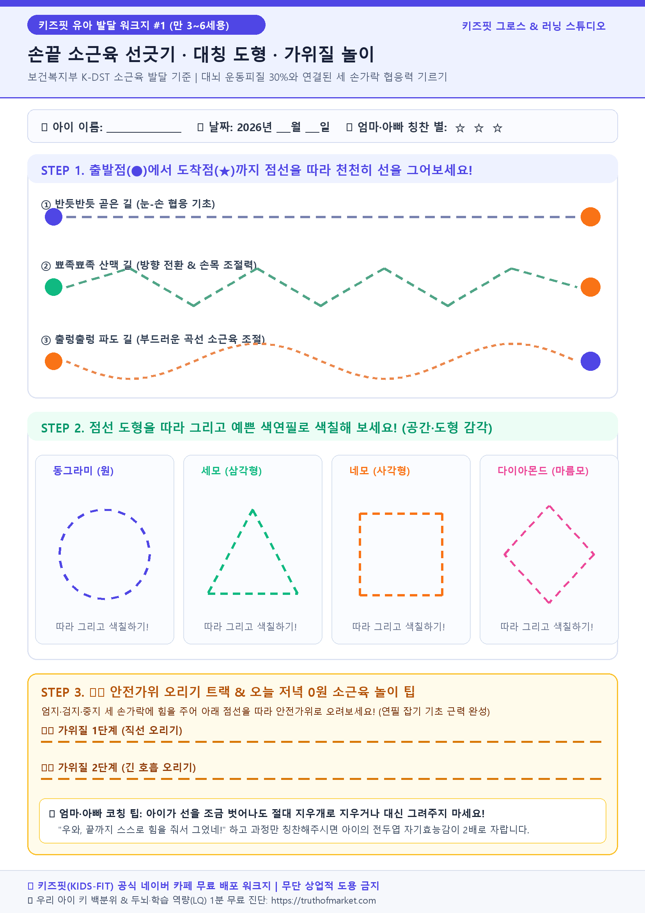
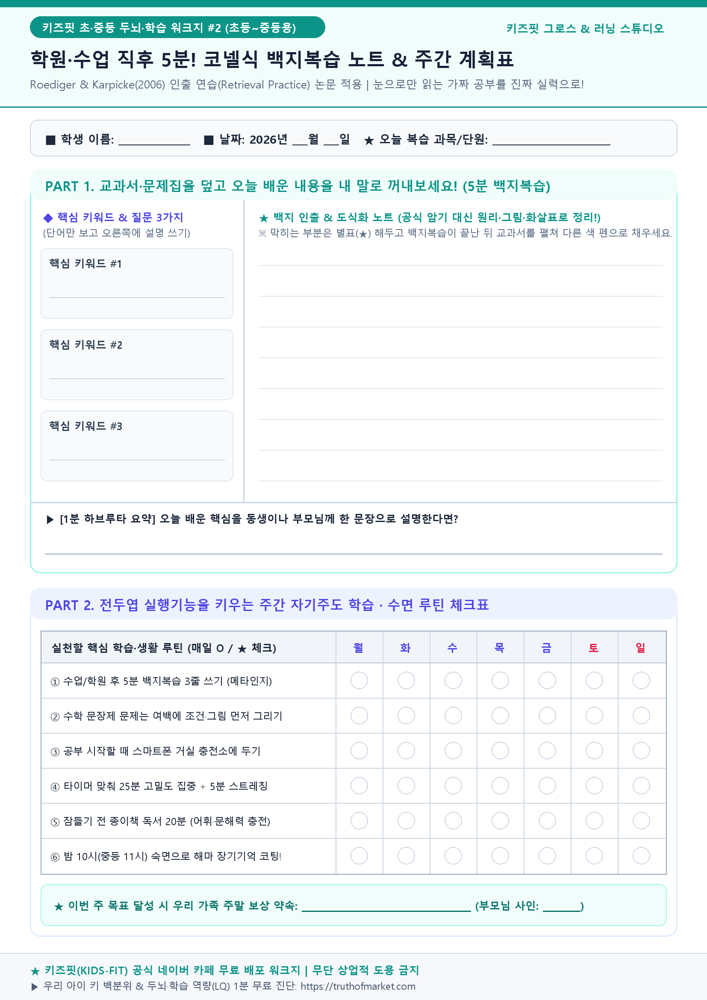
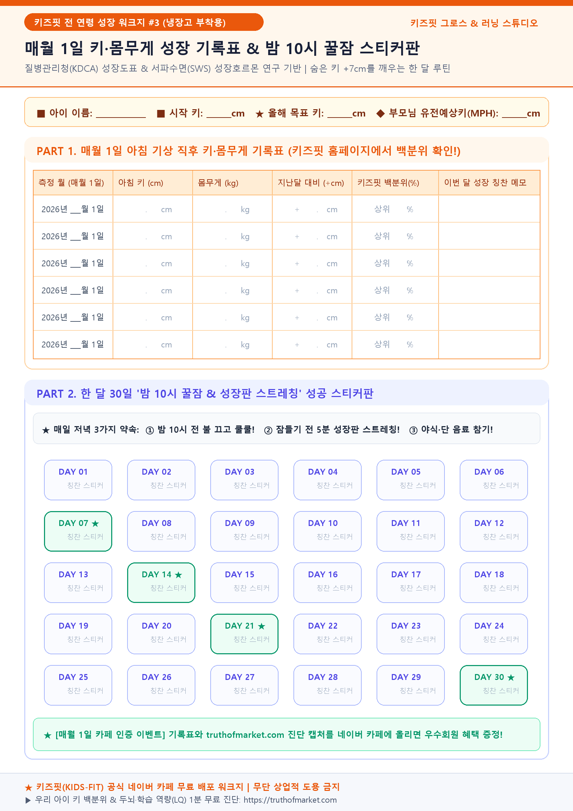

아래에서 A4 고화질 워크지 PDF 3종을 다운로드해 카페에 첨부하시고, 공지글 본문은 [1초 복사하기] 버튼을 눌러 그대로 붙여넣으세요!
보건복지부 K-DST 소근육 발달 기준 적용 | 직선·지그재그·곡선 운필력 & 도형 그리기·가위질 트랙

Roediger & Karpicke(2006) 인출 연습 논문 기반 | 핵심 키워드 3개 백지 인출 + 1분 하브루타 요약 + 주간 루틴표

질병관리청(KDCA) 성장도표 & 서파수면(SWS) 성장호르몬 연구 기반 | 6개월 키 백분위 기록표 + 30일 칭찬 스티커판

[전체 공지] 🌱 키즈핏(KIDS-FIT) 공식 네이버 카페에 오신 학부모님들을 환영합니다! (무료 진단 & 워크지 PDF 받는 법) 안녕하세요, 대한민국 3040 부모님들의 든든한 성장·학습 연구소 【키즈핏 그로스 & 러닝 스튜디오】 공식 카페입니다 😊 아이 키가 또래보다 작은 건 아닌지, 지금 나이에 어떤 교구와 공부법을 시작해야 시행착오를 줄일 수 있을지 매일 고민이 많으시죠? 저희 카페는 광고성 카더라 정보 대신 **질병관리청(KDCA) 성장도표, 보건복지부 영유아 발달선별검사(K-DST), 그리고 국내외 소아내분비·뇌과학 학술 논문**을 바탕으로 우리 아이의 신체 성장과 두뇌 학습을 함께 키우는 학부모 소통 공간입니다. ━━━━━━━━━━━━━━━━━━━━━━ 🎁 카페 가입 학부모님께 드리는 3대 무료 혜택 ━━━━━━━━━━━━━━━━━━━━━━ 1️⃣ 【1분 무료 진단】 우리 아이 신체 성장 백분위 & 두뇌·학습 역량(LQ) 보고서 • 아직 홈페이지 진단을 안 해보셨다면 지금 바로 아이 키·몸무게와 학습 고민을 클릭해 보세요! • 부모 유전키(MPH) 대비 숨은 키 +7cm 잠재력과 나이별 맞춤 공부법이 1분 만에 나옵니다. 👉 무료 진단 바로가기: https://kidsfit.co.kr 2️⃣ 【연령별 무료 워크지 PDF 자료실】 집에서 바로 뽑아 쓰는 고화질 A4 프린트 도안 • [만 3~6세용] 손끝 소근육 선긋기 · 대칭 도형 · 안전가위 오리기 워크지 PDF • [초·중등용] 학원 다녀와서 5분! 코넬식 백지복습 노트 & 주간 자기주도 계획표 PDF • [전 연령 공통] 냉장고에 붙이는 매월 1일 키·몸무게 기록표 & 밤 10시 꿀잠 30일 스티커판 PDF 👉 카페 내 [🎁 연령별 무료 워크지 PDF] 게시판에서 조건 없이 바로 다운로드하실 수 있습니다! 3️⃣ 【매월 1일 성장·학습 인증 챌린지】 • 매월 1일 아침, 홈페이지(https://kidsfit.co.kr)에서 다시 측정한 우리 아이 키 백분위 또는 학습 리포트 캡처 화면을 [📅 매월 1일 리포트 인증방]에 올려주세요! • 꾸준히 기록하시는 부모님들께 특별 워크지 풀팩과 이달의 추천 도서·교구 혜택을 가장 먼저 챙겨드립니다. ━━━━━━━━━━━━━━━━━━━━━━ 📌 10초 만에 끝나는 가입 인사 안내 ━━━━━━━━━━━━━━━━━━━━━━ • [👋 반가운 가입인사] 게시판에 아이 나이(또는 개월 수)와 요즘 가장 큰 고민(키 성장 / 식습관 / 문해력 / 수학 / 집중력 등)을 한 줄로 남겨주시면 바로 정회원 혜택을 누리실 수 있습니다! 오늘도 아이의 속도에 맞춰 다정하게 걸어가는 엄마·아빠를 키즈핏이 진심으로 응원합니다 ♥
[무료 자료 나눔] 🎁 집에서 바로 프린트해 쓰는 '키즈핏 연령별 성장·학습 워크지 PDF 3종' 무료 다운로드! 안녕하세요, 키즈핏 가족 여러분! 😊 집에서 아이와 하루 10분이라도 의미 있는 시간을 보내고 싶은데 막상 무엇을 해줘야 할지 막막하셨던 부모님들을 위해, 키즈핏 연구소에서 직접 제작한 **고화질 A4 프린트용 워크지 PDF 3종 세트**를 무료로 공유합니다! 첨부파일(PDF)을 다운로드하셔서 가정용 프린터로 A4 용지에 인쇄해 바로 사용해 보세요. ━━━━━━━━━━━━━━━━━━━━━━ 📂 첨부된 무료 워크지 PDF 3종 안내 ━━━━━━━━━━━━━━━━━━━━━━ ✅ 1번 파일: [만 3~6세 유아용] 손끝 소근육 선긋기 · 대칭 도형 · 안전가위 워크지.pdf • 대상: 만 24개월 ~ 만 6세 (유치원생) • 효과: 대뇌 운동피질의 30%와 직결된 엄지·검지·중지 세 손가락 협응력을 길러주어, 초등학교 입학 전 바른 운필력(연필 잡기)과 전두엽 집중력의 기초를 만들어 줍니다. • 엄마·아빠 팁: 선을 조금 삐뚤게 그어도 지우개로 지우지 마시고 "끝까지 힘줘서 그었네!" 하고 꼭 칭찬해 주세요! ✅ 2번 파일: [초·중등 학령기용] 학원 다녀와서 5분! 코넬식 백지복습 노트 & 주간 계획표.pdf • 대상: 초등 1학년 ~ 중학생 • 효과: 학원 수업만 듣고 내 것으로 만들지 못하는 '메타인지 착각'을 해결합니다. 책을 덮고 오늘 배운 키워드 3가지를 내 말로 꺼내 쓰는 '인출 연습(Retrieval Practice)'은 단순 반복 읽기보다 장기기억 보존율을 2배 이상 높여줍니다. • 엄마·아빠 팁: 저녁 식사 시간에 "오늘 정리한 1분 하브루타 한 줄 요약이 뭐야?" 하고 가볍게 물어봐 주세요! ✅ 3번 파일: [전 연령 공통] 냉장고 부착용! 매월 1일 키·몸무게 기록표 & 밤 10시 꿀잠 스티커판.pdf • 대상: 전 연령 (만 2세 ~ 만 16세) • 효과: 성장호르몬의 65~70%가 분비되는 밤 10시~새벽 2시 깊은 서파수면(SWS) 습관과 잠들기 전 5분 성장판 스트레칭을 아이 스스로 재미있게 실천하도록 돕는 30일 칭찬 스티커판입니다. ━━━━━━━━━━━━━━━━━━━━━━ 💡 워크지 200% 활용하는 방법! ━━━━━━━━━━━━━━━━━━━━━━ 1. 지금 첨부된 PDF 파일을 다운로드해 프린트합니다. (3번 키 성장 기록표는 냉장고에 붙여두세요!) 2. 매월 1일 아침, 키즈핏 공식 홈페이지( https://kidsfit.co.kr )에서 우리 아이 키·몸무게와 학습 상태를 입력해 **이번 달 백분위와 맞춤 처방**을 확인합니다. 3. 댓글로 **"다운로드 완료! 우리 아이도 오늘부터 시작해요 ♥"** 한 줄 응원 댓글을 남겨주시면 다음 달 새로운 워크지 제작에 큰 힘이 됩니다!
[매월 1일 공식 이벤트] 📅 '우리 아이 숨은 키 +7cm & 두뇌 역량' 매월 1일 키즈핏 리포트 인증 챌린지! 안녕하세요, 키즈핏 학부모님 여러분! 🌱 아이의 키 성장과 공부 습관은 '한 번의 비싼 처방'보다 **'매달 1일, 한 달에 한 번씩 우리 아이의 성장 궤적을 점검하는 작은 루틴'**에서 결정됩니다. 혼자 기록하면 작심삼일이 되기 쉽지만, 같은 나이대 아이를 키우는 엄마·아빠들과 함께 인증하면 6개월 뒤 놀라운 변화가 찾아옵니다! ━━━━━━━━━━━━━━━━━━━━━━ 🏆 매월 1일 '키즈핏 리포트' 인증 챌린지 참여 방법 (1분 컷!) ━━━━━━━━━━━━━━━━━━━━━━ 📌 STEP 1. 매월 1일 아침(또는 첫째 주 주말), 아이의 아침 키와 몸무게를 잽니다. 📌 STEP 2. 키즈핏 공식 홈페이지( https://kidsfit.co.kr )에 접속해 **[📏 아이 신체 성장 보고서]** 또는 **[🧠 아이 학습 분석 보고서]**를 생성합니다. 📌 STEP 3. 결과 화면 상단의 **[키 백분위 / 3단 예상키 차트]** 또는 **[5대 학습 역량 지수(LQ) 차트]** 화면을 스마트폰으로 캡처합니다. 📌 STEP 4. 본 게시판([📅 매월 1일 리포트 인증방])에 캡처 사진 1장과 함께 **이번 달 우리 아이 칭찬 한 줄 & 다짐 한 줄**을 올리면 참여 완료! (예시 글 제목: "[10월 인증] 만 8세 남아 키 백분위 42% → 46% 상승! 밤 10시 소등 2주 성공했어요!") ━━━━━━━━━━━━━━━━━━━━━━ 🎁 챌린지 참여 학부모님 특별 혜택 ━━━━━━━━━━━━━━━━━━━━━━ • 1회 이상 인증 시: 카페 우수 등급 즉시 등업 + 연령별 심화 워크지 PDF 추가 열람권 • 3개월 연속 인증 시: 키즈핏 선정 이달의 연령별 추천 도서·교구 또는 성장 영양제 특별 혜택 우선 안내 오늘 바로 우리 아이의 첫 번째 기준점(Baseline) 리포트를 뽑아 첫 인증글을 남겨보세요! 👉 1분 무료 리포트 뽑으러 가기: https://kidsfit.co.kr
[운영자 전용 가이드] 🛠️ 5분 만에 끝내는 키즈핏 네이버 카페 개설 & 메뉴(게시판) 세팅 마스터표 이 문서는 네이버 카페 관리자(꾸미기/메뉴 관리) 화면에서 그대로 복사·붙여넣기 하여 5분 만에 카페 구조를 완성할 수 있도록 정리한 세팅 가이드입니다. ━━━━━━━━━━━━━━━━━━━━━━ 1. 카페 기본 정보 설정값 (그대로 복붙하세요) ━━━━━━━━━━━━━━━━━━━━━━ • 카페 이름 추천: - 키즈핏(KIDS-FIT) 공식 카페 | 아이 키성장·두뇌학습·무료워크지 모임 • 카페 한줄 소개 (검색 노출용): - 질병관리청 성장도표 & 뇌과학 논문 기반 우리 아이 숨은 키 +7cm·문해력·수리력 무료 진단(kidsfit.co.kr) 및 연령별 무료 워크지 PDF 나눔 커뮤니티 • 카페 검색어(태그) 10개: - 아이키성장, 어린이영양제, 소근육발달, 가베, 몬테소리, 초등문해력, 백지복습, 무료워크지, 유아프린트학습지, 주말아이와가볼만한곳 ━━━━━━━━━━━━━━━━━━━━━━ 2. 카페 좌측 메뉴(게시판) 구조 (이대로 만드시면 가장 깔끔합니다) ━━━━━━━━━━━━━━━━━━━━━━ 📂 [그룹 1] 📌 키즈핏 필독 & 공지 └ 📢 전체 공지사항 (글쓰기 권한: 매니저) └ 👋 반가운 가입인사 (등업용) └ 🌐 1분 무료 성장·학습 진단 바로가기 (링크 메뉴: https://kidsfit.co.kr 연결) 📂 [그룹 2] 🎁 무료 워크지 PDF & 칼럼 자료실 └ 🖨️ 연령별 무료 워크지 PDF 나눔 (위 3종 PDF 첨부 게시글 업로드!) └ 📏 [신체성장 칼럼] 숨은 키·수면·영양·운동 팩트체크 └ 🧠 [두뇌학습 칼럼] 문해력·수리력·교구·백지복습 노하우 └ 🎨 [주말 나들이] 지역별 박물관·과학관 도슨트 코스 📂 [그룹 3] 📅 매월 1일 성장·학습 인증 & 소통 └ 📸 매월 1일 키즈핏 리포트 인증방 └ 💬 또래 학부모 육아·학습 고민 수다방 └ ⭐ 내돈내산 교구·도서·영양제 리얼 후기방 ━━━━━━━━━━━━━━━━━━━━━━ 3. 회원 등급 이름 설정 (4단계 추천) ━━━━━━━━━━━━━━━━━━━━━━ • 1단계 (가입 직후): 🌱 새싹 학부모 (가입인사 작성 시 자동 등업 설정!) • 2단계 (정회원): 🌿 키즈핏 정회원 (가입인사 1회 작성 시 무료 워크지 PDF 전체 다운로드 가능) • 3단계 (우수회원): 🌳 열정 성장맘·대디 (매월 1일 리포트 인증 1회 이상 참여) • 4단계 (VIP회원): 👑 키즈핏 명예연구원 (3개월 연속 인증 및 베스트 후기 작성)